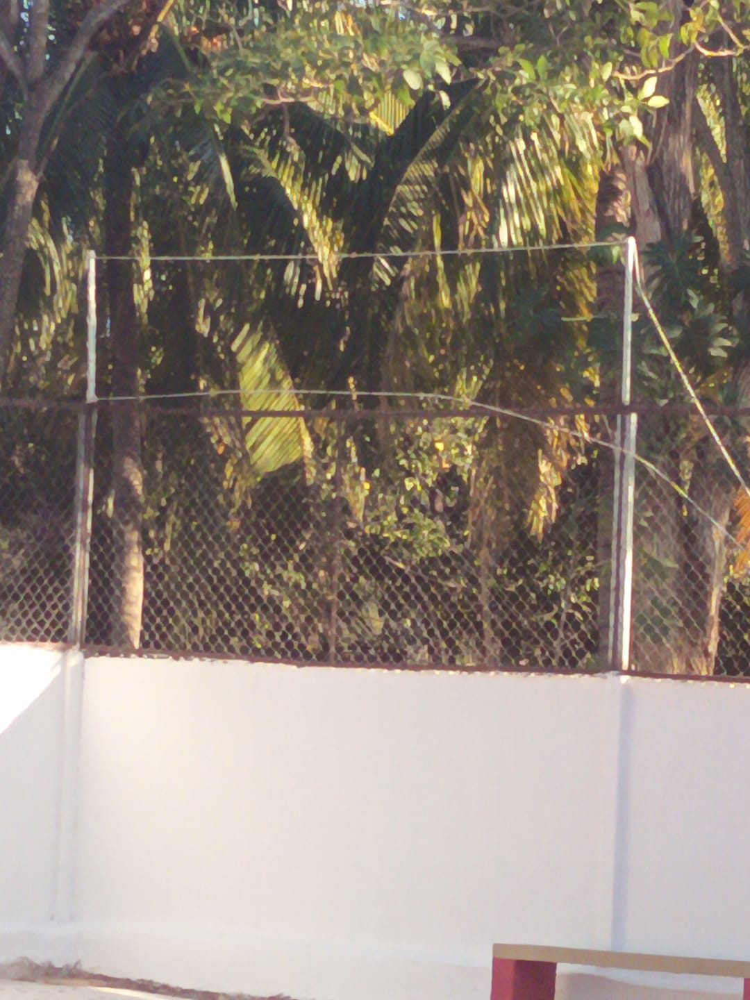
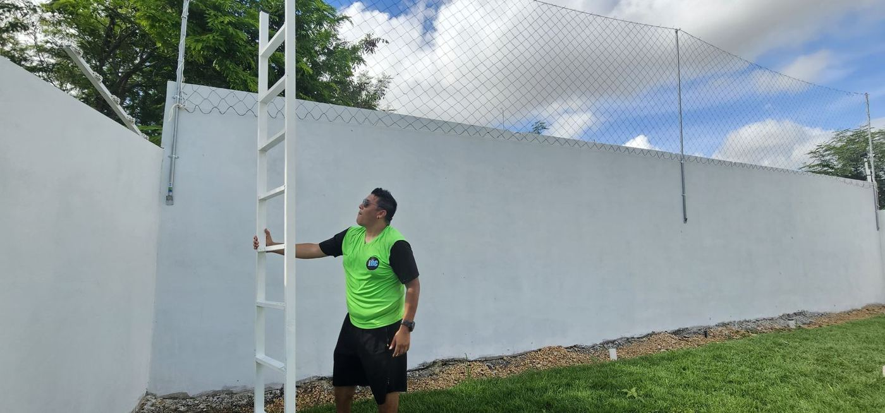
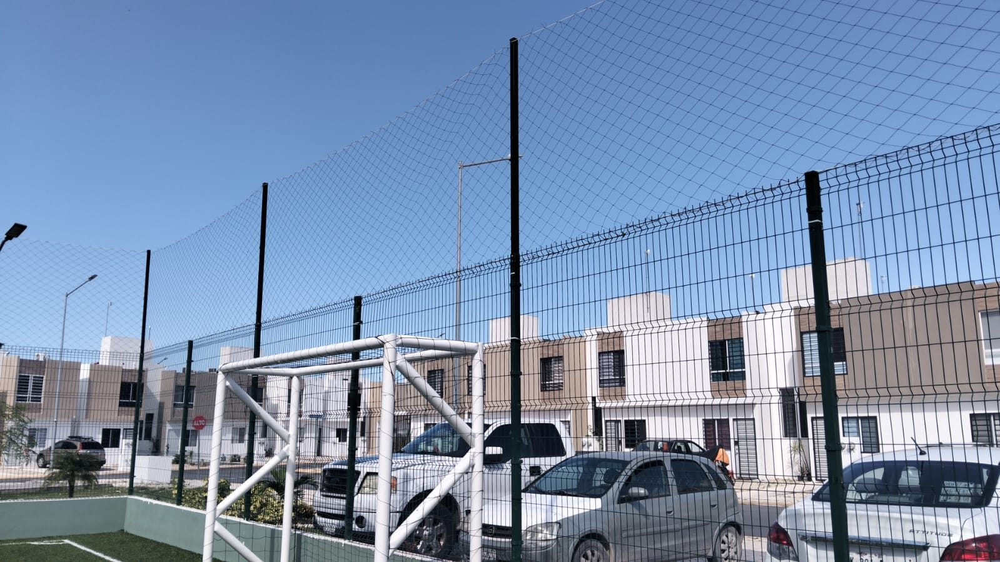

Si vas a cerrar una cancha de fútbol, tarde o temprano te toca decidir entre malla ciclónica o red perimetral. Las dos sirven para que el balón no se salga, pero no funcionan igual ni cuestan lo mismo de instalar. En muchas canchas la mejor respuesta es usar las dos.
En qué se diferencian
| Malla ciclónica | Red perimetral de nylon | |
|---|---|---|
| Material | Alambre de acero | Nylon alquitranado calibre 18, negro |
| Estructura | Necesita más material metálico conforme sube | Más ligera: postes con argollas y piola |
| Golpe del balón | Rígida: el balón rebota | Flexible: absorbe el balonazo |
| Uso ideal | Parte baja del cerramiento, donde hay contacto con jugadores | Parte alta y techo de red |
| A la medida | En rollos de medidas estándar | Fabricada a la medida de cada lado |
Por qué se combinan: ciclónica abajo, red arriba
Es lo que más recomendamos: los dos primeros metros de malla ciclónica y, de ahí para arriba, 4, 6 u 8 m de red perimetral. No es obligatorio, pero suele ser lo más útil.
- ¿Por qué ciclónica abajo? Porque detiene a los jugadores. Evita que choquen contra la red, y eso evita rupturas.
- ¿Por qué no todo de malla ciclónica? Porque la instalación y la herrería que lleva la malla ciclónica a toda la altura cuestan más que la red.
El resultado: una cancha bien cerrada, con una estructura más ligera arriba, que es donde más pesa el viento.

El error que vemos seguido: puntas de malla ciclónica
Cuando la red va por encima de una malla ciclónica, las puntas salidas o dobladas del alambre atrapan la red y la desgastan con el roce. Antes de instalar, revisa que la ciclónica no tenga puntas expuestas y que los remates estén bien cerrados. Si hay postes, conviene protegerlos. Este y otros problemas están en errores comunes al instalar una red perimetral.
Cuándo conviene solo red perimetral
- Canchas en azoteas o sobre bardas existentes, donde no quieres cargar más peso.
- Cuando necesitas mucha altura o un techo de red.
- Cuando la cancha se usa para varios deportes y necesitas una abertura más cerrada para pelotas pequeñas.

Cómo calcular cuánta red necesitas
Mide el largo de cada lado y la altura que debe cubrir solo la red (sin contar la malla ciclónica o la barda). Si no tienes claro cuánto subir, en qué altura debe tener una red perimetral te explico cómo decidirlo.
Fabricamos redes perimetrales para canchas de fútbol de nylon alquitranado negro, con aberturas de 1", 2", 3" y 4", y en promedio duran más de 5 años a la intemperie. La fabricación toma de 5 a 6 días hábiles después del anticipo, y el envío va incluido en la cotización.
Preguntas frecuentes
¿Qué es mejor para una cancha de fútbol, malla ciclónica o red perimetral?
Lo que más recomendamos es combinarlas: 2 m de malla ciclónica abajo, que detiene a los jugadores y evita que choquen con la red, y de 4 a 8 m de red perimetral arriba, porque la instalación y la herrería de la ciclónica a toda la altura cuestan más.
¿Se puede poner red perimetral encima de una malla ciclónica?
Sí, es de las instalaciones más comunes. Antes hay que revisar que la malla ciclónica no tenga puntas salidas, porque atrapan la red y la desgastan.
¿Cuánto dura una red perimetral a la intemperie?
Nuestra red de nylon alquitranado dura en promedio más de 5 años a la intemperie. La duración real depende del sol, el salitre, los impactos, el roce y la instalación.
¿Cómo se cotiza la red si ya tengo malla ciclónica?
Se cotiza solo la parte de red: el largo de cada lado por la altura que va por encima de la malla o la barda, por metro cuadrado y con el envío incluido.